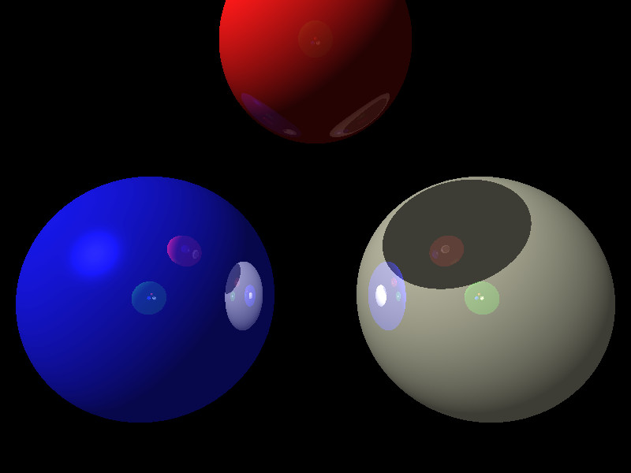
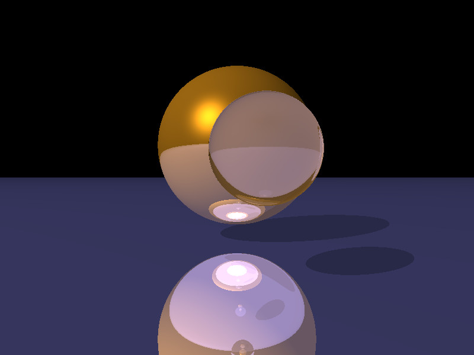
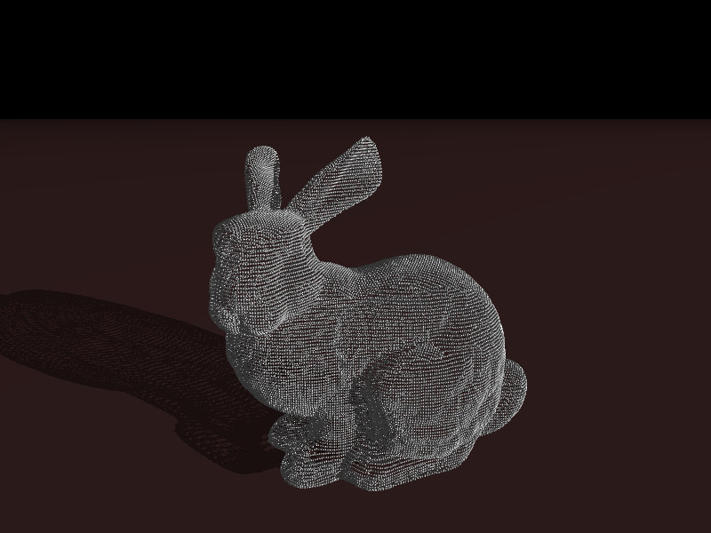
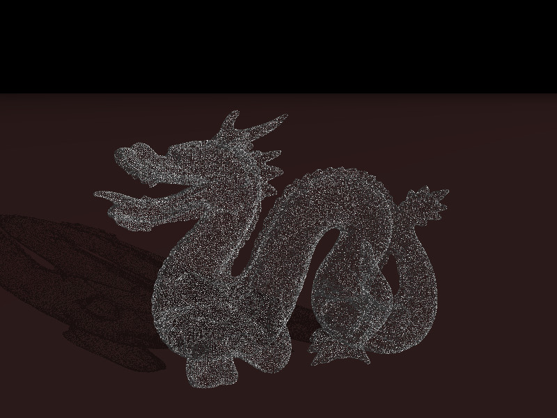
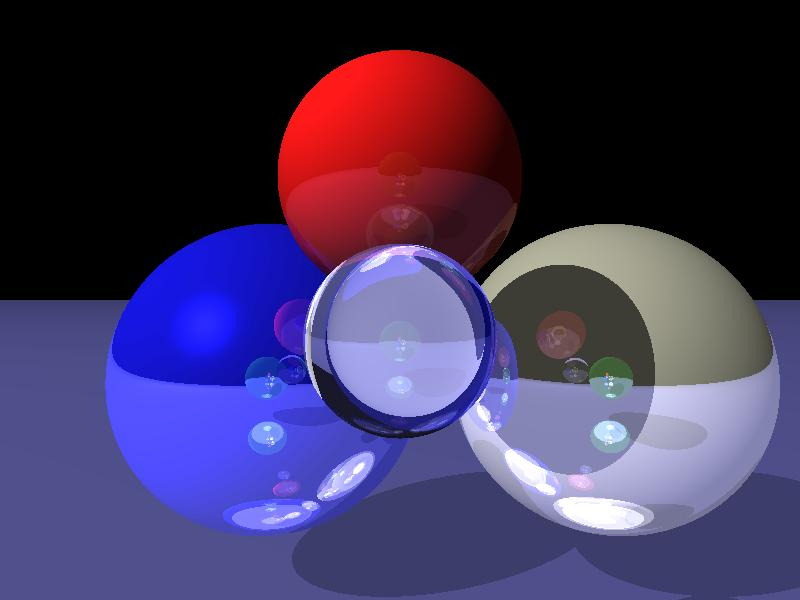

Ray Tracing
Description
For my final project, I implemented a ray tracer in go, that can simulate light
hitting an object, reflecting off the object, and refracting
through the object. The ray tracer reads from a povray input file
specified on the command line. I only support the lighting
components (diffuse, ambient, specular, roughness), reflection,
refraction, and index of refraction properties within the povray
file. The ray tracer will also run the initial casts in parallel
using either the number of cores on your machine, or the value of
the environment variable GOMAXPROCS to determine how many threads
to spawn.
Basic Algorithm
The basic steps I followed to cast a scene are as follows:
- Store all the objects that will be in your scene into a
buffer
- Calculate a view plane based on your camera's position, up
vector, right vector, and look_at point
- For each point in the view plane, cast a ray from your
camera through the point, and write the color of the
intersected object to your image
The casting also required a basic algorithm:
- Start with an initial ray given to you, go through your
buffer of saved objects, and find which object the ray will
intersect first, if any
- Test for ray intersection
- If ray doesn't intersect any objects, return predetermined
background color
- If ray does intersect an object, save the point of
intersection and which object was hit
- Assuming there was an intersection, calculate the current
pixel's color with phong shading of the intersection point
using the objects diffuse, ambient, specular, and 1/roughness
values
- If the object's reflection coefficient is greater than 0, then
calculate the reflected color:
- Calculate the reflected ray starting at the
intersection point, and traveling away at the same angle to
the normal as the incoming ray was
- Determine the reflected ray's color by casting your
reflection ray using the same algorithm as your global
casting
- If your reflected ray hit anything, then multiply your
reflected ray's color by the object's reflection
coefficient, and add it to the current calculated pixel
color
- If the object's refraction coefficient is greater than 0, then
calculate the refracted color:
- Calculate the refracted ray by starting at the
intersection point and calculating the ray's direction
using the object's index of refraction and the equation:
n1 * sin(Θ1) = n2 * sin(Θ2), where n
represents the index of refraction. I assumed the
non-object was air with an index of refraction of 1.0
- Determine the refracted ray's color by casting the
refracted ray using the same algorithm as the global
cast
- If your refracted ray hit anything, then multiply your
refracted ray's color by the object's refraction
coefficient, and add it to the current calculated pixel
color
- Finally, if the computed pixel's color had an alpha component
less than 1, I needed to get the color of the object behind it,
if one exists. I accomplished this by ray casting (again!) with
the current object being ignored in the buffer of objects. Then
multiply the returned color by 1 - (computed pixel's
color).alpha and add it to the computed pixel's color
Parallelization
In order to parallelize the ray caster, I utilized go's goroutines
and channels. A goroutine can either be a new thread or process
that will run the given function, depending on what the program
sets up. A channel in go is essentially a pipe that allows
goroutines to communicate with one another in either a synchronous
or asynchronous manner. I set up the program to use goroutines as
threads, and created an asynchronous channel that the main
goroutine will write into and the child goroutines will read from.
I decided to parallelize this program by creating a number of
threads and having them read in the pixels that needed to be cast,
and cast them, writing the returned color into an image data
struct. This allows multiple rays to be initially cast in parallel,
however any recursive casting will still be done serially.
Sample casts
Reflection

Refraction

Many Spheres

Many Many Spheres

Reflection and Refraction

Github Repo
What a beautiful website!